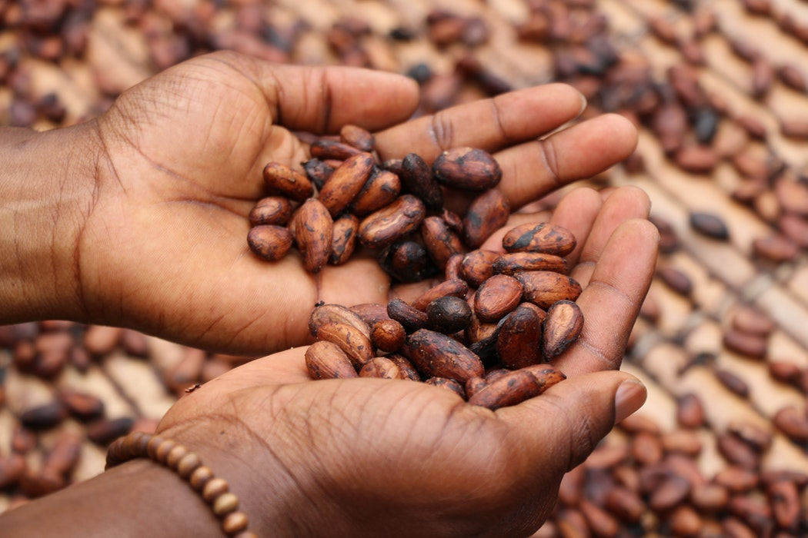
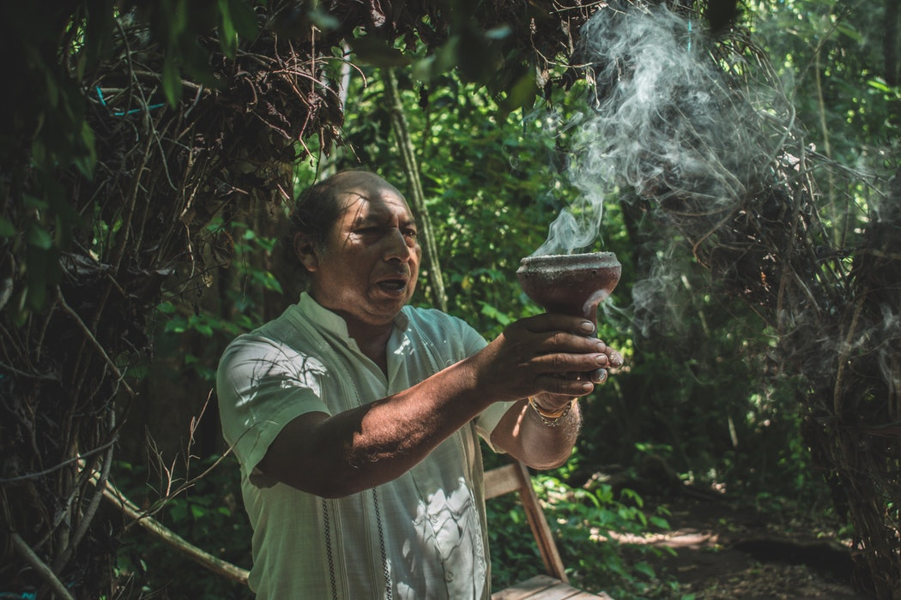
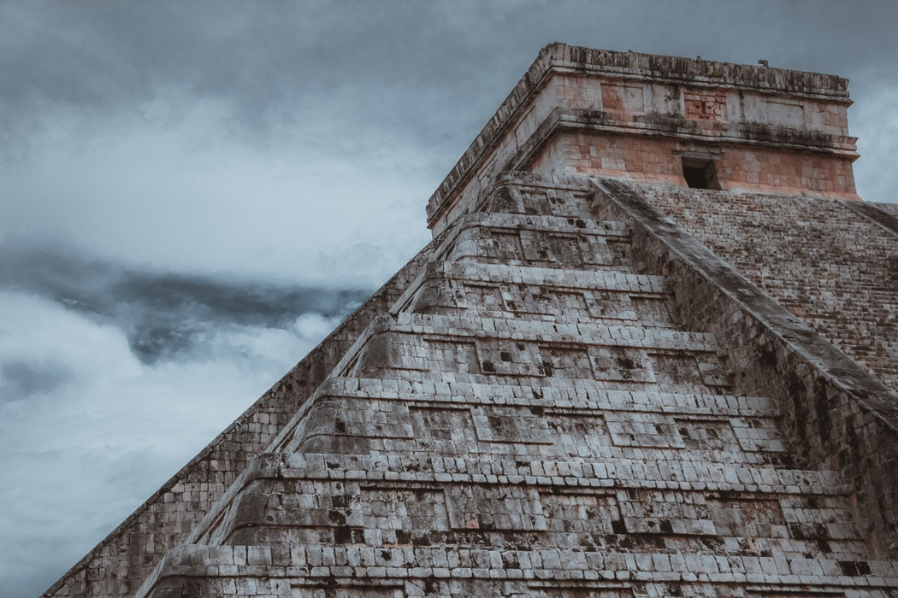

The history of our soo loved chocolate
Did you know that the history of cocoa and chocolate goes back almost 4,000 years? Or that cocoa played an important role as a currency in the Mayan and Aztec cultures? Cocoa and chocolate are not merely the sensual foodstuffs that make people happy; they have a rich history. Cocoa and chocolate were first consumed for medicinal purposes. It was only later that they became popular as foodstuffs due to their seductive taste. There are few foodstuffs which have such a rich and intriguing history as cocoa and chocolate. Just like coffee, we inherited the cocoa bean from the mysterious pre-Columbian cultures in Latin America. When Cortés first imported cocoa to Europe, and when he learned how to make a chocolate drink with it, it caused quite a stir: divine to some; heretical to others. Even today, cocoa and chocolate still exude an aura of mystery, luxury and pleasure.
Mayan Civilization And The Birthplace Of Chocolate
The Mayans of Central America are believed to be the first to discover cocoa as early as 900 AD. They learned that the beans inside the cocoa pods could be harvested and made into a liquid that would become a treasured Mayan treat.
Bitter Water
Mayan chocolate was very different than the chocolate we know today. It was a liquid made from crushed cocoa beans, chili peppers, and water. (There was no sugar in Central America.) They poured the liquid from one cup to another until a frothy foam appeared on top. In fact, the word ‘chocolate’ is said to come from the Mayan word ‘xocolatl’ which means ‘bitter water.’
“Food Of The Gods”
It may have been bitter water, but it was held in such high esteem that Mayans called it the “food of the gods.” Cocoa was so revered that images of cocoa pods were painted on the walls of stone temples and Mayan artifacts have been found that show kings and Mayan gods drinking chocolate. Cocoa was often consumed during religious ceremonies and marriage celebrations. All Mayans could enjoy cocoa, regardless of their social status.
A Coffee Shop On Every Corner
Cocoa was the frothy drink of its day, highly valued for its healing and medicinal properties. Mayans would whip up a mix, and people would enjoy it the same way we enjoy coffee today.
Chocolate And Commerce
Cocoa quickly became the force of the Aztec economy. The demand for the cocoa bean and the beverage that it produced brought about a huge network of trade routes throughout the region.
When the Aztecs conquered the Mayans, they were forced to pay taxes to the Aztecs. These taxes were called “tributes” and they were paid in cocoa, so the Aztecs, who couldn’t grow their own cocoa, would always have a supply.
Cocoa beans were kept in locked boxes in businesses, and some enterprising Aztecs actually made counterfeit cocoa beans.
he Aztecs Rise To Power
By 1400 AD, the Mayan power was decreasing. The Aztecs ruled over the highlands of central Mexico, far from the rainforests of the Mayans. Since the Aztecs could not grow their own cocoa, they had to trade to get the beans.
The Aztecs also had their own word for chocolate: chocolatl (cho co LA til), which was very similar to the Mayan word xocolatl.
Money Grows On Trees
Cocoa beans were very valuable. The Aztecs used them as money, and were very protective of their beans. They paid for food, clothes, taxes, gifts, and offerings to their gods using cocoa beans. Having a pocket full of beans was like having a wallet full of cash. As far as the Aztecs were concerned, money really did grow on trees.
A Gift From The Gods
According to legend, Quetzacoatl (ket za koh AH tul), the Aztec God of Vegetation, came to earth with a cocoa tree and taught the mortals how to cultivate cocoa and make a drink out of its beans. This made the other gods furious, and they threw him out of paradise for sharing the sacred drink with humans. When he left, he vowed he would return—a promise that would bring about tremendous consequences for the Aztecs.
Secrets Of Aztec Dating
King Montezuma, the Aztec king, drank 50 cups of cocoa a day, and an extra one when he was going to meet a lady friend. Because of its stimulating effects, Aztec women were forbidden to drink it.
Unlike the Mayans, drinking cocoa was a luxury that few Aztecs could afford. Aztecs believed that wisdom and power came from eating the fruit of the cocoa tree. The drink was so precious that it was served in golden goblets that were thrown away after just one use!